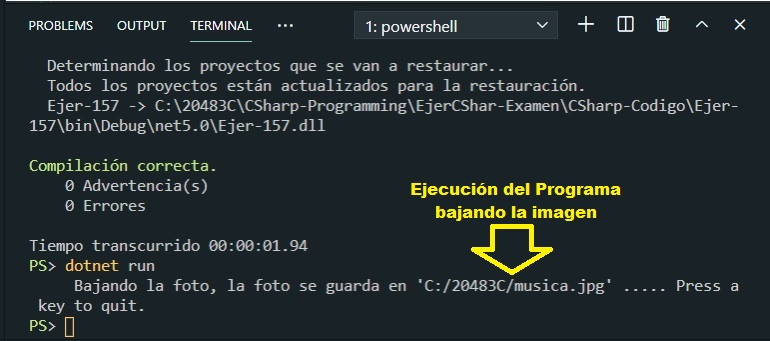
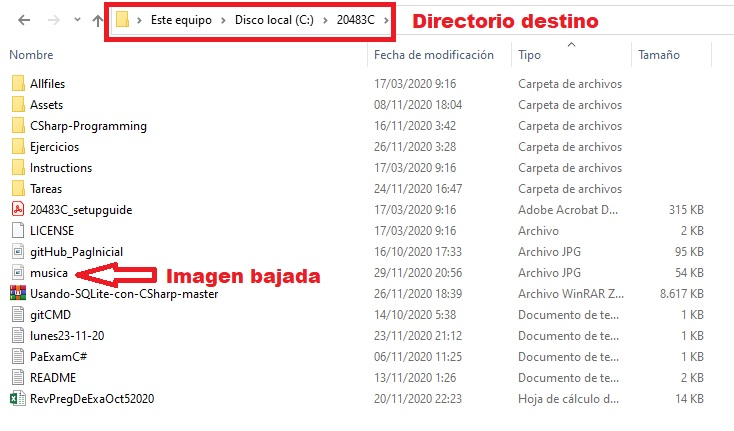

You need to download an image named Image1.jpg from Server1 and store the image locally as Filel.jpg.
Which code should you use?

A. Option A
B. Option B
C. Option C
D. Option D
Correct Answer: C
Section: Volume B
Explanation
Explanation/Reference:
Explicación
Opción A.
WebRequest request = HttpWebRequest.Create("https://le-cdn.website-editor.net/711b5e80ef1349888fc4bab086670e23/dms3rep/multi/opt/F1-960w.jpg");
StreamWriter writer = new StreamWriter(request.GetResponse().GetResponseStream());
writer.WriteLine("C:/20483C/fileOpcionA.jpg");El error mostrado al intentar bajar la foto se muestra en la siguiente imagen:

Opción B.
WebClient client = new WebClient();
StreamWriter writer = new StreamWriter("C:/20483C/fileOpcionB.jpg");
writer.Write(client.DownloadData("https://le-cdn.website-editor.net/711b5e80ef1349888fc4bab086670e23/dms3rep/multi/opt/F1-960w.jpg"));
writer.Dispose();
client.Dispose();Tal y como se puede ver la Clase StreamWriter Clase Implementa TextWriter para escribir los caracteres de una secuencia en una codificación determinada. Esta opción aunque crea un archivo no alza una imagen pero no baja ninguna imagen.
Opción C.
WebClient client = new WebClient();
client.DownloadFile("http://server1/image1.jpg","C:/20483C/musica.jpg");
client.Dispose();Esta es la opción que da la respuesta correcta.

La ubicación de la imagen bajada se muestra en la siguiente imagen:

Opción D.
WebRequest request = HttpWebRequest.Create("https://le-cdn.website-editor.net/711b5e80ef1349888fc4bab086670e23/dms3rep/multi/opt/F1-960w.jpg");
Esta es la opción produce un error 'System.ArgumentException' y por eso no es la respuesta correcta.
StreamWriter writer = new StreamWriter(request.GetResponse().GetResponseStream());
writer.Write("C:/20483C/fileOpcionD.jpg");
writer.Dispose();
La imagen escogida para bajar es la siguiente, así como el link de donde fue bajada:

Respuesta:
Por lo antes mostrado la respuesta correcta es la Opción C
Mostrando de manera visual la respuesta:
Fuentes:
https://docs.microsoft.com/es-es/dotnet/api/system.io.streamwriter?view=net-5.0